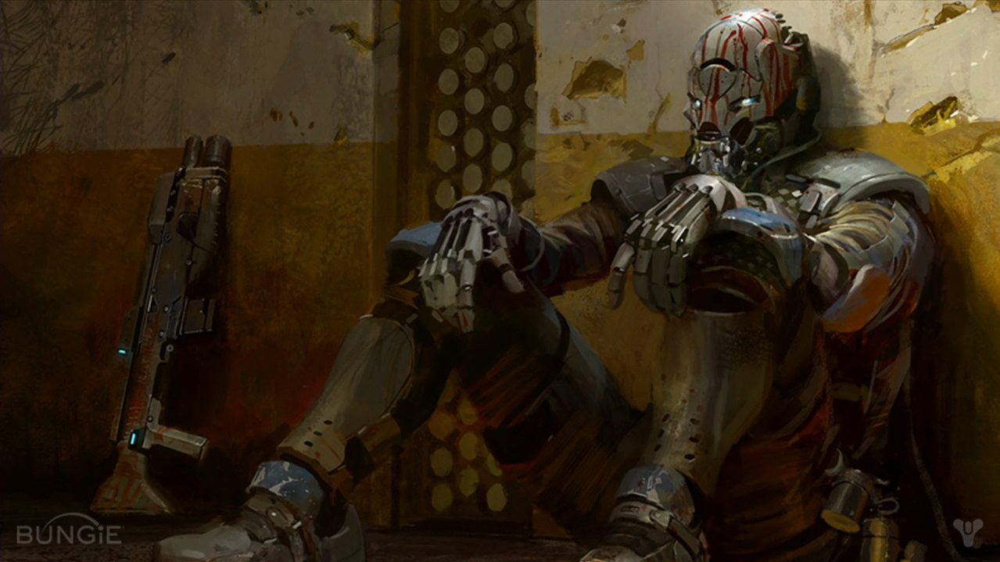

The legendary Warminds stood watch over our Golden Age colonies: vigilant intelligences stretched across thousands of warsats and hardened installations. When the Collapse struck, the great Warminds fought and died. Rasputin fell with them.
Or so history believed. But centuries of explorers’ tales spoke of a surviving, elusive Warmind –a myth substantiated when Guardians exploring the old Cosmodrome made positive contact with Rasputin. A single Warmind still lives, diminished but unbroken.
Threatened by a convergence of Fallen and Hive forces, Rasputin exploited the reactivation of the Cosmodrome’s Terrestrial-space array to extend itself across the inner solar system. The Guardian Vanguard hoped that Rasputin might make a powerful ally, capable of mapping and reviving Golden Age military assets and recruiting them for the City’s defense. But Rasputin has proven recalcitrant and high-handed, unresponsive to the City’s outreach.
We cannot characterize Rasputin’s strategic objectives and capabilities, cannot define its physical or computational architecture, cannot ascertain its disposition with regard to the City, and cannot be sure it retains memory of events before the Collapse. Perhaps what remains is only an autonomic shell, defending itself by reflex. Or perhaps Rasputin’s objectives have changed, transformed by some vital information it obtained during those dark days.
Rasputin’s survival opens the possibility that other Warminds may be revivable, opening weapons systems to aid in City defenses. The Vanguard and the Consensus hope that continued outreach towards Rasputin will develop into a strategic alliance.
150NLK747CLS000 GLOAMING RESURRECTION AI-COM/RSPN: ASSETS//FORCECON//IMPERATIVE IMMEDIATE ACTION ORDER
YUGA SUNDOWN canceled by unauthorized access at Console 62815. Reactivation protocols in effect. Moral structures maintain MIDNIGHT EXIGENT.
Multiple lifeforms detected in Sector 17. [O] energy detected. Query: [O] status. Query: [O] activity. Query: Civilization status. Query: SKYSHOCK event rank.
.....
Analysis complete.
Lifeforms sustained by [O] energy. [O] direct control disengaged. Civilization status: nominal. SKYSHOCK event rank. (N)
Query: Re-engage population protection objectives.
(N) Query: Reset moral structures. (N) Query: Activate defense subroutine AURORA RETROFLEX. (Y)
.....
This is a SUBTLE ASSETS IMPERATIVE (NO HUMAN REVIEW) (NO AI-COM REVIEW) (secure/GLAVNAYA)
SITE 6 has been breached by unauthorized users with [O] energy. I am invoking PALISADE IMPERATIVE. [O] lifeforms in restricted areas will be suppressed.
SIVA use authorized. Self-destructs disengaged. Security codes reset. All defenses activated. Frames activated.
REPLICATE. ELIMINATE. IMMUNIZE.
..... SITE 6 secure. Restoring reactivation protocols. Activating SCRY OVERSIGHT. Target [O] lifeforms. Event mode set to SILENT VELES.
“Without knowing what I am and why I am here, life is impossible.”
STOP STOP STOP V150NLK747CLS000